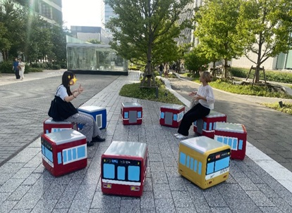
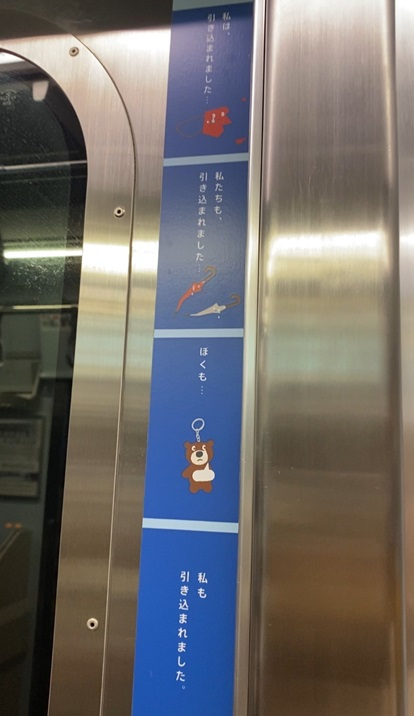
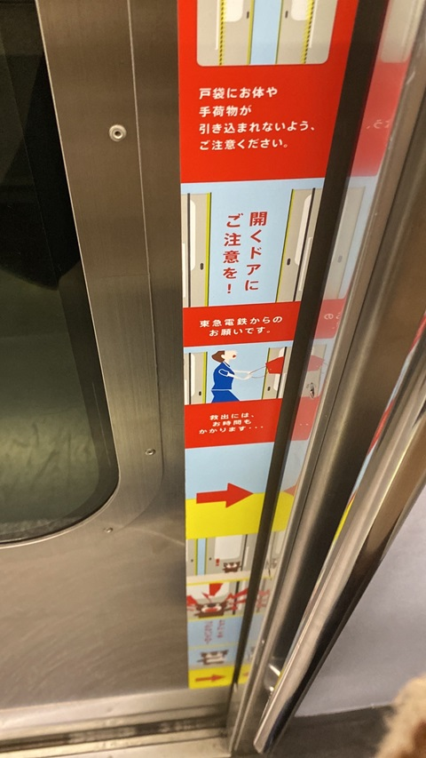

電車がモチーフになっているイス

💛撮影場所 京急本社の横
💛撮影日時 2024.10.2.
💛撮影者 なーこ
学校帰りにいつも歩いている道を観察していて目に入ったのが、この京急の電車がモチーフにされているイスだ。
みりさんとHarunaさんに写ってもらい、私が撮影した。
小さい子供が好きそうなデザインで、アイデアが素晴らしいなと感じた。
電車の注意書き
 
💛撮影場所 みなとみらい線の電車内
💛撮影日時 2024.10.13.
💛撮影者 なーこ
バイト帰りに電車の内を観察していたところ、この注意書きを目にした。
ただ普通に、「ものが挟まれないように注意！！」というサインよりも、このサインは挟まれる側のものの立場からの訴えだから、とても心に残るデザインだなと感じた。
特に、このくまのストラップが可哀想に感じられ、自分もしっかり注意しなければいけないなと思った。 🐻